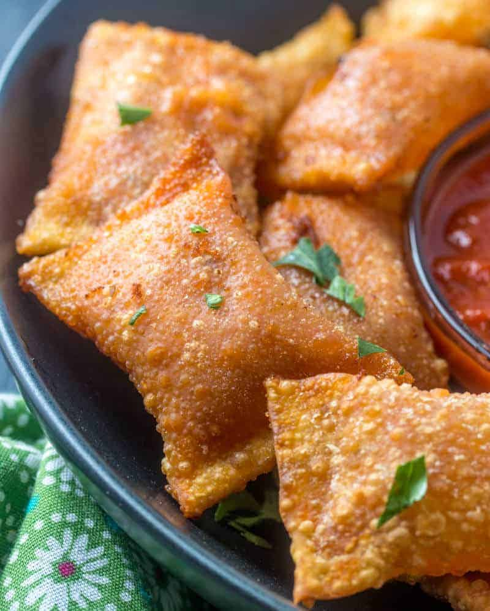

Pizza Rolls

Crispy, Crunchy, Homemade Pizza Rolls
Here is an easy recipe to make your very own homemade pizza rolls. These are so good and crunchy, everyone will love them, even the kids!
Ingredients
- 1/2 cup Pepperoni Stick
- 1/2 cup Mozzarella Cheese
- 1 cup Pizza Sauce
- Won Ton Wrappers
- Vegetable Oil
Directions
- Dice up 1/2 cup of pepperoni stick and mozzarella cheese into small cubes
- In a bowl, mix together 1/2 cup of pepperoni, 1/2 cup mozzarella, and 1 cup of pizza sauce
- Place pizza filling in the middle of a won ton wrapper. Fold and close up the wrapper into a rectangular shape.
- Fry up the pizza rolls in vegetable oil until it turns golden brown color
- Enjoy!